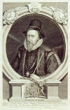

02.jpg){kind=link}
04.jpg){kind=link}
01.jpg){kind=link}
05.jpg){kind=link}
{kind=link}
03.jpg){kind=link}
 to Bios Page
to Bios Page to Home Page
to Home PageThomas SACKVILLE
(1st E. Dorset)
Born: 1527/1536, Buckhurst, Withyam, Sussex, England
Acceded: 1604
Died: 19 Apr 1608, Whitehall
Buried: 26 May 1608, Withyam, Sussex, England
Notes: Knight of the Garter.
Father: Richard "Fill Sack" SACKVILLE (Sir Knight)
Mother: Winifred BRYDGES (M. Winchester)
Married: Cecily BAKER 1555
Children:
1. Robert SACKVILLE (2º E. Dorset)
2. Mary SACKVILLE
3. Jane SACKVILLE (V. Montagu)
4. Anne SACKVILLE
Associated with: ¿?
Children:
5. Son SACKVILLE
I want to thank Bryan Ross, of the Bristol Renassaince Faire, for the research he had done about Thomas Sackville
Sir Thomas Sackville, Baron Buckhurst, Member of her Majesty's Privy Council, Lord Lieutenant of Sussex, Exchequer to her Majesty the Queen and Commissioner over state trials. Born 1535/6. Second of three children of Richard "Fill Sack" Sackville, Chancellor of the Exchequer and Winifred Brydges, dau. of Sir John Brydges, Mayor of London. Educated Sullington (Lullington?) g.s.; Hart? Hall, Oxford; Jesus?, Cambridge; Inner Temple, admitted 1 Jul 1555, called; Cambridge, MA 1571; Oxford incorp. 1592. Married 1555, Cecily, daughter of Sir Thomas Baker of London and Sissinghurst, Kent, and had 4 sons, including Robert, and 3 daughters; 1 son illegitimate.
|  | Succeeded father 21 Apr 1566. Knighted 8 Jun 1567; K.G. nominated 22 Apr, installed 18 Dec 1589. Created Baron of Buckhurst 8 Jun 1567, Earl of Dorset 13 Mar 1604. Member of Parliament for Westmoreland 1558, East Grinstead 1559, Aylesbury 1563. Justice of the peace, Kent, Sussex 1558/1559-death; feodary, duchy of Lancaster, Sussex 1561; joint lord lieutenant Sussex 1569; Ambassador to France 1571-72, 1591, to the Netherlands 1586, 1598; trier of petitions in the Lords, Parliaments of 1572, 1584, 1586, 1589, 1593, 1597; custos rot. Sussex 1573/4-death; chief butler, England 1590; high steward, Winchester c. 1590; joint commissioner of great seal Nov 1591-May 1592; chancellor, Oxford University 1591; Lord treasurer May 1599-death. |
His elder sister Anne (who he would in later years argue extensively with regarding the ownership of Sir Thomas More's estate Beaufort which she did inherit from her mother, then Marchioness of Winchester, and Thomas had led average lives for children of their era and station and had also survived the third sibling a second daughter who passed on at an early age.
His education went as planned as his father would say, where upon at the age of fifteen; he was had been educated out of Hart Hall, in Oxford. Two years later in 1553 at the age of seventeen; he left his childhood home and took residence in London where he began pursuing his life as a poet and playwright.
He received the bulk his wealth from his father Sir Richard Sackville a wealthy landowner whose acquisitiveness earned him the nickname of 'Fill Sack' and was noted for reasons of his great wealth and vast patrimony. He continue to live in such a manner as his father did, knowing how to spend his moneys well and in such a way that he and his family could live in a comfortable fashion.
| At nineteen years of age in 1555, he met, fell in love with and married the daughter of a member of the Privy Council under Queen Mary, Cicely Baker of Kent. His father's exclusion from office under Mary did not significantly delay Thomas Sackville's entry upon public life for it was not long after his coming of age that he sat in his first Parliament. His election at the beginning of 1558 for East Grinstead, where his father had wielded great influence, had the appearance of a safeguard against his failing to carry off the knighthood for Westmoreland; after he had done so and entered the House as junior knight for that shire, the vacancy at East Grinstead was filled by another Sackville nominee, Thomas Farnham. The circumstances of Sackville's election for Westmoreland are not made easier of explanation by the damaged state of the return, on which the surname is represented only by the fragment 'sa...' A century ago the name was read as 'salkeld'. The accuracy of this reading is borne out by the appearance of that name, afterwards erased and replaced by 'sackvell', on one of the two remaining copies of the Crown Office list; the other and later copy has 'sackveld' alone. It is thus possible that a Thomas Salkeld, presumably of the prominent Westmoreland family of that name, was elected but was afterwards superseded by Sackville. What is more likely, however, is that Sackville was elected and that instead of his unfamiliar name its near counterpart was entered on the return, to be copied on the Crown Office list and only corrected when Sackville appeared in the House. Who procured his election is a matter of speculation. Neither he nor his fellow-knight Anthony Kempe, another Sussex man, had any standing in Westmoreland, but both could claim a marriage connection with Henry Clifford, 2º Earl of Cumberland, hereditary sheriff of the county, and with his father-in-law the 3rd Lord Dacre of Gillesland; Cumberland must also have had dealings with both Sackville's father, and ex-chancellor or augmentations, and his father-in-law Sir John Baker, one of whom doubtless made the approach. For Sackville, as for Kempe, a knighthood of the shire was not to recur; he was to sit as a burgess in the first two Elizabethan Parliaments and in the third he took his seat in the Lords. |
Sackville had appeared on the pardon roll in Oct 1553 as of London. On 8 Mar 1557, together with Thomas Swynton, he purchased various properties in Kent and Sussex for £1,221. In co-operation with Thomas Norton he wrote "The Tragedie of Gorboduc" but he handed over his other literary project "A myrroure for magistrates" to George Ferrers and William Baldwin after completing the 'Introduction'.
In 1558 upon the death of Queen Mary; her half sister Elizabeth Tudor, third cousin on her mother Anne Boleyn's side; ascended England's throne.
In addition during the year of 1561 he received the title of "Grandmaster of the Order of Freemasons". In 1563 he was once again elected to Parliament this time for Aylesbury. When he became thirty one years of age, he was knighted and raised to peerage as Lord Buckhurst which did take place on the eighth day of Jun of that year. One year prior to receiving the title of Lord Buckhurst; Queen Elizabeth awarded a piece of property to keeping known as Knole.
Much of the fabric of Knole dates from the second half of the fifteenth century. On 30 Jun 1456 William Fiennes sold the estate £266 13s 4d to Thomas Bourchier, Archbishop of Canterbury (and for a brief period in 1455-6, Lord Chancellor of England). Between that date and his death in 1486, Bourchier built himself a substantial but relatively austere palace grouped around a series of courtyards, and containing all of the elements that one would expect to see in the house of an important medieval prelate - a great hall with a day parlour and first-floor solar at one end and kitchens and domestic offices at the other, a chapel, and lodgings for his large household.
|
When Bourchier died - at Knole - he left the estate to the See of Canterbury, and it functioned as an archiepiscopal palace until 1538, when Henry VIII bullied Thomas Cranmer into presenting it to the Crown. The King considerably enlarged the house by building three new ranges of lodgings and a turreted and crenellated gatehouse in the front of the Archbishop's original gatehouse, thus forming what is now known as the Green Court, the main entrance court at Knole. After his death, the house went through a rather confused series of occupancies. Edward VI assigned it to John Dudley, Duke of Northumberland, who for some reason returned it two years later. Mary he granted it to Cardinal Pole for life in 1556; when he died in Nov 1558 (on the same day as the Queen) it reverted to the Crown. Elizabeth granted it to John Dudley's son, Robert, Earl of Leicester, who promptly sublet it, before returning it, still sublet in 1566. In Jun 1566 the Queen presented the estate to his keeping, under whom Knole has finally settled down to a more stable period of ownership. But throughout his career as one of her Majesty’s chief advisers, he had been unable to even live at Knole, in the stead he had managed replace the old Archbishop's palace with a Theobalds or a Holdenby for his Queen's entertainment. Although he had been granted the house and estate in 1566, it currently occupied by the Lennard family, tenants who had moved in as the Earl of Leicester handed the property back to the Crown. In 1568 he had been commissioned to traveled to France on an official visit, his mission was to persuaded the Queen Mother to make a motion for the marriage of Elizabeth with her second son, the Duke of Anjou. In 1569 at the age of thirty-three years old, he was honoured to be placed in the office of Lord Lieutenant of Sussex. Two years later in 1571, he returned to France to congratulate Charles IX on his marriage afterwhich he did return to England bringing Paul du Foix along to continue the discussion of the impending marriage. Also within that year he had been bestowed a Master of Arts from Cambridge. In 1572, he became a member of her Majesty's Privy Council and became employed as Commissioner at state trials. As a member of her Majesty's Privy Council, he was considered a protégée of William Cecil, Baron Burghley and he tends to agree with most of the issues Burghley is in favor of. His career took Sackville to the treasurership and an Earldom before he died at the council table on 19 Apr 1608. |
The Somerset House Conference, 1604
(Juan de Velasco Frias; Juan De Tassis, C. Villa Mediana; Alessandro
Robida; Charles De Ligne, C. Aremberg; Jean Richardot; Louis
Vereyken; Thomas Sackville, E. Dorset; Charles Howard, E.
Nottingham, Henry Howard, E. Northampton; Charles Blount, E.
Devonshire and Robert Cecil, E. Salisbury) |
|
to Bios Page |
|
| to Peerage Page |
to Home Page |